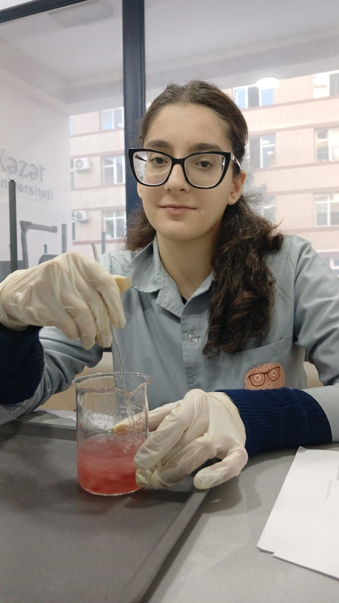
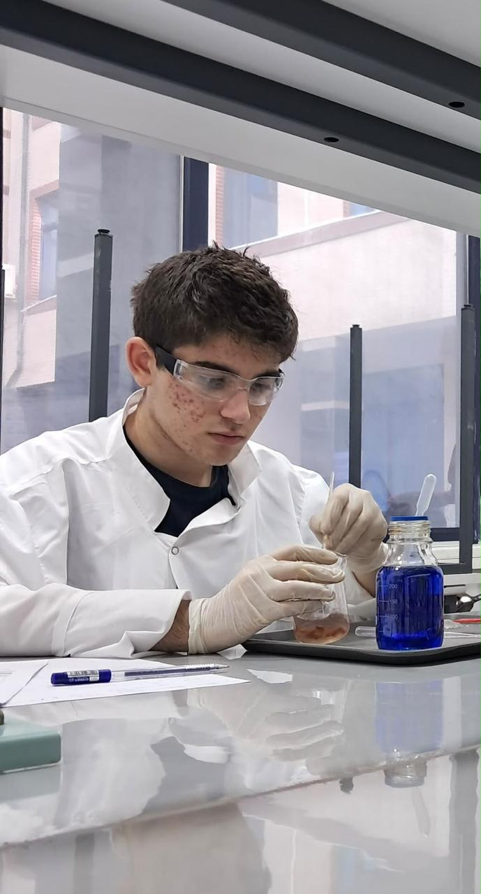

Strand 02 · Experimentation
Inside Our Lab
Lab coats, gloves, safety glasses and real food. These photographs show the work as it happens: weighing, mixing, adding reagents to food samples and filtering what comes out.
What these photos are
Hands-on work in progress, photographed as the bench was actually set up. Captions describe only what can be seen.
They are not results. No measurement from these sessions is published yet — when one is, it will appear on its pairing page with its date and number of repeats.
Photographs from the lab
-
 01 · TestAdding reagent to a food sample
01 · TestAdding reagent to a food sample
-
 02 · SeparateFiltering a food extract
02 · SeparateFiltering a food extract
-
 03 · WeighWeighing on an analytical balance
03 · WeighWeighing on an analytical balance
-

04 · MixStirring a red food sample -

05 · MixPreparing a sample beside a reagent


Select a photograph to enlarge it. Use the arrow keys to move between photos.
What happens at the bench
The same few steps, in the photographs above, sit underneath every measurement we plan. Doing them the same way every time is what makes one sample comparable with the next.
-
Weigh
A sample starts as a weighed amount, so it can be compared with the next one and repeated by someone else.
Photo 03
-
Mix
Food is mashed, blended or dissolved so the whole sample meets the same conditions.
Photos 04, 05
-
Test
A reagent is added to the food. A colour change shows a reaction with something in the sample.
Photo 01
-
Separate
Filtering separates the solid part of a sample from the liquid, so the liquid can be examined on its own.
Photo 02
Good practice you can see
- Gloves and lab coats in every photograph.
- Safety glasses during reagent work (photos 01 and 05).
- Samples handled on trays, so spills stay contained.
- A record sheet on the bench while the work happens (photo 05).
Where the lab's questions come from
Many of the questions tested at the bench start in a lunchbox: a pulse dish served with lemon, a tomato packed both raw and roasted, two starchy foods in one box.